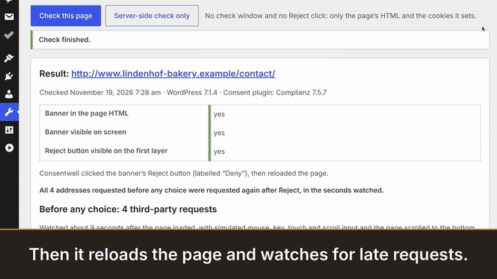
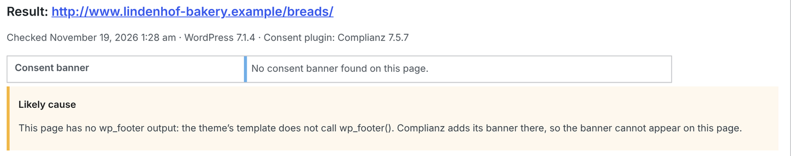
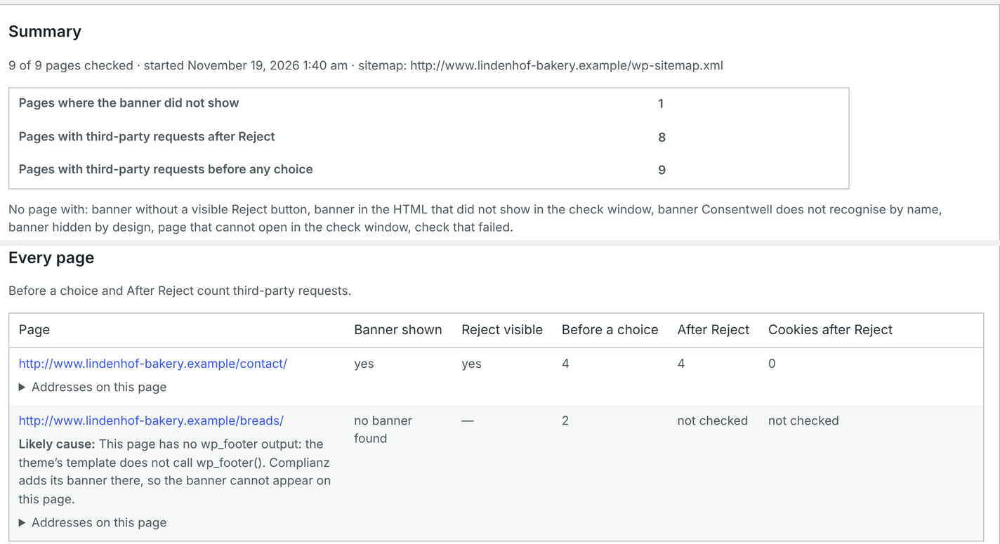

Consentwell for WordPress
Is your consent banner showing to visitors, and what still loads after Reject?

Free: the check, one page at a time. Pro, $19 once: checks every page in your sitemap, up to 5,000, in one run.
- See whether your banner shows to a logged-out visitor
- See the exact addresses that still load after Reject (Consentwell clicks Reject for you on Complianz and CookieYes)
- Copy the result as text for your consent plugin’s support forum
The picture: after Reject on the contact page of a demo bakery site running Complianz Free (wizard defaults), the page still requested two Google Fonts stylesheets, reCAPTCHA’s api.js and a Google Maps frame, each with its full address. How the images were made.
Works with
- Complianz 7.5.7 and CookieYes 3.5.9: Consentwell clicks Reject for you.
- GDPR Cookie Compliance 5.3.1, CookieAdmin 1.2.6, SureCookie 1.8.1 and Beautiful Cookie Consent Banner 4.10.0: the banner is found and you click its Reject in the check window.
- Cookie Notice & Compliance 3.1.19 and WPConsent 1.2.1: the banner does not appear in the check window. The result says the banner is in the page HTML but not shown in the check window, gives the likely cause, lists what loads before any choice and does not click Reject.
- Not run, because they need an account, a licence or a site ID: Real Cookie Banner, Cookiebot, iubenda, Termly.
Watch it work

What a check shows
Tools > Consentwell: pick a page, click Check this page, keep the screen open for about 20 seconds.


wp_footer(), and the result says so.Consentwell Pro: the sitemap in one run
- Check every page runs the check on the pages in your sitemap, up to 5,000 addresses, about 20 seconds a page with the screen open (120 pages take about 40 minutes). Pause and Resume.
- A summary, a CSV, and Since the previous run: what is new or gone after you fix something.
- Pro clicks Reject on Complianz and CookieYes banners; on any other banner it lists what loads before any choice only.

$19 once, unlimited sites, every future Pro update, no renewal · needs the free plugin, installed first (the download holds both) · Polar checkout · 14-day refund if it doesn’t work as described and we cannot fix it
Details
- Quick start: install, first check, reading the result, Pro. In detail: what the check does, other consent plugins, limits. How it was tested.
- Free plugin: consentwell.zip 1.0.6, tested on WordPress 7.1.4 and 6.5.5, PHP 7.4.33 and 8.3.6, on Linux; source code included (GPL-2.0-or-later).
- Needs WordPress 6.5+, PHP 7.4+ and an administrator account. In the free plugin, automatic Reject on Complianz and CookieYes; for another banner you click Reject yourself when it appears in the check window (see Works with). Not run: a web server on Windows or macOS, and any browser but Chromium; if it doesn’t work for you and we cannot fix it, the 14-day refund applies.
- Checkout by Polar; the download arrives by email. Neither plugin sends anything to us or anyone else, and Pro never asks for the licence key Polar emails.
- GPL-2.0-or-later, source in both zips. The free plugin is not in the WordPress.org directory yet. Not affiliated with Complianz, CookieYes or Cookiebot. Support: support@ochrestack.com.